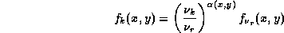

News
News
| Getting Started | Documentation | Glish | Learn More | Programming | Contact Us |
|
| VERSIONID |
News
|
background noise
bandpass calibration
bandwidth smearing
bandwidth synthesis
base class
baseline
baseline co-ordinates
baseline-time order
baud
beam
beam patch
beam squint
beam switching
Binding
bit
bitmap
blanked pixel
blinking
brightness temperature
broadband imaging
browser
bug
bus error
byte
In astronomy, a term applied to all sources of unwanted fluctuations in the output of a system that is producing, measuring or recording a signal. Natural background noise sources in radio astronomy include galactic noise (synchrotron radiation), thermal noise from receivers and the Earth's atmosphere, quantum noise, and the cosmic microwave background. Some of these are, of course, in the foreground of most astronomical objects!
In radio astronomical spectroscopy, the calibration of the amplitude and phase response of a system across the entire set of spectral channels within which data have been recorded.
In an image from a radio interferometer, space-variance of the point spread function which is attributable to non-monochromaticity, or finite bandwidth. The point spread function---at a particular point in a map--- taking into account bandwidth smearing, but ignoring other instrumental effects, is termed a delay beam. Bandwidth smearing is a radial effect: the delay beams become more elongated in the radial direction from the interferometer phase tracking center as their distance from the phase tracking center increases. The delay beams are easily calculable when all of the receivers in an array have identical, and known, i.f. passbands.
Bandwidth smearing can, in principle, be eliminated (assuming that the bandpass shapes are known) by applying an image reconstruction algorithm which knows about the smearing mechanism; that is, by an algorithm which is more general than the usual deconvolution algorithms. The most common method for reducing bandwidth smearing is the technique of bandwidth synthesis.
A technique of radio interferometry which is intended to diminish the effect of bandwidth smearing. Bandwidth synthesis observing is very similar to spectral-line mode observing: the i.f. bandpasses are split up into a number of pieces, or channels, and the data in each channel are treated separately up until the imaging/deconvolution stage of processing. At that stage, the problem can be formulated as a system of simultaneous convolution equations. See also broadband imaging.
In object-oriented programming, a class from which other classes are derived through inheritance.
1. In radio interferometry, the separation between the electrical, or phase centers of two interferometer elements. See also baseline co-ordinates, u-v-w co-ordinates.
2. In spectroscopy, the contribution to a spectrum from phenomena that are not of astronomical interest, such as frequency dependent properties of the receivers, unwanted multi-path propagation in an antenna structure, or spectral lines emitted by the Earth's atmosphere, or by astronomical sources other than those under study.
In radio astronomy, the baseline co-ordinates of an interferometer are often given as b, b, b in an equatorial Cartesian co-ordinate system whose axes point as follows:
The above equatorial baseline co-oordinates are related to the azimuthal (conventional surveyor's) description of the baseline in terms of components to the north, to the east and in elevation (vertical) by:

where is the latitude of the interferometer.
A set of visibility measurements V is said to be in baseline-time order if the ordering is such that all of the data for the 1-2 baseline, sorted by time, occur first, followed by the data for the 1-3 baseline, again sorted by time, etc. This ordering is convenient for purposes of data display.
The maximum information-carrying capacity of a communication channel in symbols (state-transitions or level-transitions) per second. This coincides with bits per second only for two-level modulation with no framing or stop bits. A symbol is a unique state of the communication channel, distinguishable by the receiver from all other possible states. For example, it may be one of two voltage levels on a wire for a direct digital connection or it might be the phase or frequency of a carrier.
Where data are transmitted as packets, the actual "data rate" of a channel is R * D / P where R is the "raw" rate in bits per second (including packet overhead), D is the number of data bits in a packet and P is the total number of bits in a packet.
The term "baud" was originally a unit of telegraph signalling speed, set at one Morse code dot per second. It was proposed at the International Telegraph Conference of 1927, and named after J.M.E.Baudot (1845-1903), the French engineer who constructed the first successful teleprinter.
1. In radio interferometry, the inverse Fourier transform of the u-v sampling distribution, or of a weighted u-v sampling distribution, possibly convolved with a gridding convolution function: the idealized response to a point, or unresolved, radio source.
2. A numerical approximation to 1.
3. A digitized version of 2, sampled on a regular grid (usually regarded as an image).
4. Synonymous with point spread function.
5. (Occasionally) as above, but taking into account instrumental effects, so that the beam depends on position in the sky. See dirty image.
Occasionally, any one of the above, other than 5, is termed the synthesized beam.
In the Clark CLEAN algorithm, that portion of the central part of the beam which is used in the inner iterations, or the minor cycles, of the deconvolution.
In radio interferometry, direction dependent, or space-variant instrumental polarization, which is difficult to calibrate, can arise from beam squint. The beam squint effect, for the usual case of a pair of (nominally) orthogonally polarized feeds on each array element, is due to differences in their power patterns: in particular, to differences in the directions of their peak response.
In single dish radio astronomy, any technique which forms the difference of signals received from two (or more) pointings on the sky without physically moving the main reflector of the antenna. Beam switching may be achieved by:
By rapidly forming differences between sky positions that do and do not contain astronomical sources, beam switching can minimize the corruption of spectral baselines by non-idealities in the instrumental frequency response, or of continuum observations by atmospheric fluctuations.
The connection of a software component to another, usually a user interface, so that a user may make use of it. In AIPS++, binding is often accomplished using Glish, and the Distributed Object interface.
Contraction of "binary digit": the smallest amount of information that can be stored in digital memory, either 0 (off) or 1 (on).
A data file or structure which corresponds bit for bit with an image displayed on a computer display, usually in the same format as it would be stored in the display's video memory. A bitmap is characterized by the width and height of the image it represents. A bitmap may also represent a colored image, in which case more than one bit will be used to represent each pixel. Computer graphics that treat images as collections of dots rather than as shapes, or objects, may be described as bitmapped graphics or raster graphics. Contrast with vector graphics.
In a digital image, a pixel whose value is undefined. In computer storage of quantized digital images, some special numeric value is assigned to the blanked pixels, so that they may be recognized as undefined and given whatever special treatment is required.
In astronomical image processing, a method for comparing two similar but different images wherein a display is switched between the two images in rapid succession. Spatial differences appear to move back and forth, while intensity differences pulsate. When the switching rate, duty cycle and transfer functions of the displays are controllable by the user, blinking is a powerful tool for assessing subtle but systematic differences between images, e.g. those due to moving or variable objects in crowded fields, or to subtle artifacts in image formation.
A measure of the intensity of a region of the sky, based on the temperature of a black body that would emit radiation of the observed intensity at the given observing frequency. Frequently computed in radio astronomy using the Rayleigh-Jeans approximation, in which case it is directly proportional to the intensity per unit area. For thermal emission mechanisms, it may correspond to a physical temperature in an emitting region.
A refinement of the radio interferometric method of bandwidth synthesis, in which one solves simultaneously for the radio brightness distribution f(x,y) at some reference frequency, and for the (spatially varying) spectral index across the observing band. Assuming that the observing band is split into n frequency channels centered at
one solves the simultaneous set of convolution equations
where in the k'th frequency channel g is the dirty image, b the dirty beam and f is given by:

The b are identical apart from a dilation factor. If the frequency channels are narrow enough, one can expand the u-v coverage considerably with immunity to bandwidth smearing. Fractional bandwidths as great as 20% to 30% can be used, depending on the linearity of the spectral index variations.
A program designed to render hypertext documents, possibly with multimedia extensions such as graphics, sound and video clips, and to provide a means of navigating from one hypertext node to another. Browsers act in a client-server relationship with remote computers as servers.
An actual or a perceived programming error or program deficiency. The bug may be in the eye of the beholder since a user may fancy an application similar to, but differing from, the one for which the program is intended. When real, may be fixed by a kluge.
An error condition reported when a process has attempted to access a restricted or non-existent part of a computer's memory. Synonymous with segmentation fault.
A unit of computer (memory or disk) storage, nearly always 8 bits in modern systems.
You could now go back to the:
Copyright © 1996,1999,2000 Associated Universities Inc., Washington, D.C.
abridle@nrao.edu, 19 July 1996, 16:05 EDT